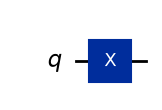
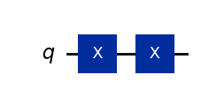
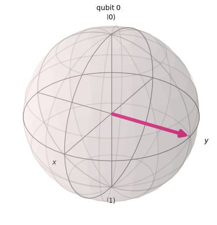

5.7. XGate#
This is a Pauli operator and one of the most important one-qubit gates. Hence, this section covers its properties at depth.
5.7.1. Definition#
Transformation of computational basis
\(X\) gate flips the computational basis, which resembles to the \(NOT\) gate for classical computation. However, when it acts on superposition states, the state does not flip (the Bloch vector does not inverted).
Dyadic expression
Matrix expression
U gate expression
R gate expression
The qiskit circuit code symbol is x and it appears in quantum circuit as

or
┌───┐ q: ┤ X ├ └───┘
Qiskit Example 5.7.1
We construct a short quantum circuit using two Xgates and check how the state vector is transformed. The initial state is always \(|0\rangle\). The first Xgate flips it to \(|1\rangle\) and the second Xgate flips it back to \(|0\rangle\).
# import QuatumCircuit and QuantumRegister classes.
from qiskit import *
from qiskit_aer import Aer
# import STatevector class
from qiskit.quantum_info import Statevector
# Preparation
qr=QuantumRegister(1,'q') # create a single qubit with name 'q'.
qc=QuantumCircuit(qr) # create a quantum circuit
# Intial state
psi0 = Statevector(qc)
# apply the first Xgate to 0-th qubit
qc.x(0)
# Intermediate state
psi1 = Statevector(qc)
# apply the second Xgate to 0-th qubit
qc.x(0)
# Final state
psi2 = Statevector(qc)
# Format ket vector with LaTeX.
ket0 = psi0.draw('latex')
ket1 = psi1.draw('latex')
ket2 = psi2.draw('latex')
# Show the result using display function
from IPython.display import display, Math
display("Quantum circuit",qc.draw('mpl'),"State vector before the gate",
ket0,"State vector after the first Xgate",ket1,
"State vector after the second Xgate",ket2)
'Quantum circuit'

'State vector before the gate'
'State vector after the first Xgate'
'State vector after the second Xgate'
5.7.2. Acting on a superposition state#
When XGate is applied to a super position state the coefficient is swapped. That is
Exercise 5.7.1 Prove Eq. (5.4).
Qiskit Example 5.7.1 How do the following superposition states transformed by the Xgate?
Using the general result (5.4), we find
Recalling that the global phase factor can be ignored, we conclude that
The following Qiskit code demonstrates that mathematically \(X|L\rangle = i |R\rangle\) but \(X|L\rangle\) \simeq |R\rangle$ when plotted in the Bloch sphere.
# import QuatumCircuit and QuantumRegister classes.
L = Statevector.from_label("l")
R = Statevector.from_label("r")
# Preparation
qr=QuantumRegister(1,'q') # create a single qubit with name 'q'.
qc=QuantumCircuit(qr) # create a quantum circuit
# set the qubit to |L>
qc.initialize(L)
# apply Xgate
qc.x(0)
# Final state
final=Statevector(qc)
# Show that the final state is not exactly the same as |R>
final.draw('latex')
# Compare the final state with |R> in Bloch sphere.
from qiskit.visualization import plot_bloch_multivector
# Generate Bloch vectors
R_bloch = plot_bloch_multivector(R)
final_bloch = plot_bloch_multivector(final)
from IPython.display import display
# Compare X|L> and |R>. They are equivalent in the Bloch sphere.
display("Original |R>",R_bloch,"X|L>",final_bloch)
'Original |R>'

'X|L>'
Exercise 5.7.2 Show that \(X|+\rangle = |+\rangle\) and \(X|-\rangle = -|-\rangle\). This means that \(X\) does not change \(|\pm\rangle\) except for the phase factor.
5.7.3. Important Properties#
\(X^2 = I\)
This means that
\(X^2\) does not do any thing on the qubit.
\(X\) is self-inverse, that is \(X^{-1} = X\).
\(X\) is self-adjoint (\(X^\dagger = X\)) since \(X\) is unitary (\(X^\dagger = X^{-1}\)) by definition.
Property 1 was deomnstrated in Qiskit Example 5.7.1.
Last modified: 08/31/2022